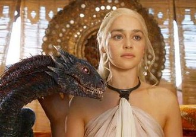

| Link to Wikipedia |
description |
picture |
|
Tyrion Lannister
|
Tyrion Lannister, also known by the nickname the Halfman or the Imp and later by the alias Hugor Hill, is a fictional character in the A Song of Ice and Fire series of epic fantasy novels by American author George R. R. Martin, and its television adaptation Game of Thrones. He is a prominent point of view character in the series, having the most viewpoint chapters (49 chapters) in the first five published novels. Based on an idea that came to Martin while writing the 1981 novel Windhaven, Tyrion has been called one of the author's finest creations and most popular characters by The New York Times. Martin has named the character as his favorite in the series. |

|
|
Cersei Lannistera
|
Cersei Lannister is a fictional character in the A Song of Ice and Fire series of fantasy novels by American author George R. R. Martin, and its television adaptation Game of Thrones, where she is portrayed by English actress Lena Headey. Introduced in 1996's A Game of Thrones, Cersei is a member of House Lannister, one of the wealthiest and most powerful families on the continent of Westeros. She subsequently appeared in A Clash of Kings (1998) and A Storm of Swords (2000). She becomes a prominent point of view character in the novels, beginning in A Feast for Crows (2005) and A Dance with Dragons (2011). The character will also appear in the forthcoming volume The Winds of Winter. |

|
|
Arya Stark
|
Arya Stark is a fictional character in American author George R. R. Martin's A Song of Ice and Fire epic fantasy novel series. She is a prominent point-of-view character in the novels with the third most viewpoint chapters, and is the only viewpoint character to have appeared in every published book of the series.
Introduced in 1996's A Game of Thrones, Arya is the third child and younger daughter of Lord Eddard Stark and his wife Lady Catelyn Stark. She is tomboyish, headstrong, feisty, independent, disdains traditional female pursuits, and is often mistaken for a boy. She wields a castle-forged steel smallsword named "Needle", a parting gift from her half-brother Jon Snow, and is trained in the Braavosi style of sword fighting by Syrio Forel. |

|
|
Daenerys Targaryen
|
Daenerys Targaryen is a fictional character in George R. R. Martin's A Song of Ice and Fire series of novels, and the television adaptation Game of Thrones, in which English actress Emilia Clarke portrays her. In the novels, she is a prominent point of view character. She is one of the series' most popular characters, and The New York Times cites her as one of the author's finest creations.
Introduced in 1996's A Game of Thrones, Daenerys is one of the last surviving members (along with her older brother, Viserys) of House Targaryen which, until 14 years before the events of the first novel, had ruled Westeros from the Iron Throne for nearly 300 years before being ousted. She subsequently appeared in A Clash of Kings (1998) and A Storm of Swords (2000). Daenerys was one of a few prominent characters not included in 2005's A Feast for Crows, but returned in the next novel A Dance with Dragons (2011). |

|